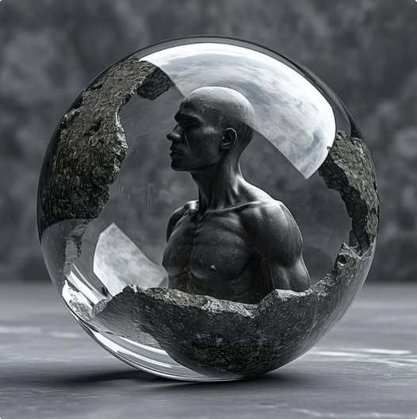

Теоретик и исследователь, изучающий взаимосвязь сознания, пространства и границ власти
Моя практика — это пересечение философии, медиа-искусства и критической археологии. Я рассматриваю сознание не как побочный эффект среды, а как фундаментальную константу, задающую саму возможность среды. Через художественные формы я исследую, кто конструирует действительность — и кому она принадлежит.
В условиях управляемой открытости и цифровых мифологий я не верю в нейтральность технологий. Моя задача — вскрывать ландшафты власти, замаскированные под инклюзивность. Я не создаю объекты — я формирую пространства, где мышление обретает статус субъекта.

Эссе о том, почему сознание невозможно смоделировать технически. Даже в условиях стерильных лабораторий или цифровых симуляций сознание остаётся первичной структурой, определяющей саму ткань реальности. В центре — критика посткультуры как формы стратегического перераспределения власти через среду.
Читать на Facebook
Анализ проекта UN1TY через призму археологического метода. Сопоставление с вортицистской стратегией Уиндема Льюиса показывает, как эстетика может быть полигоном для социальных экспериментов, в которых выбор между токсичностью и инклюзией — не более чем выбор интерфейса контроля.
Читать на Facebook
Рассматривается утрата источника как акта власти: симуляция заменяет реальность, а управление осуществляется через множественные зеркала, а не командные вершины. Эти стратегии распада формы демонстрируют, как современное мышление стремится избежать ответственности, растворяя субъект в интерфейсе.
Читать на Facebook
Email: nadin@primer-test-lab.org
Instagram: @yourprofileTest
Telegram: @Test_interface